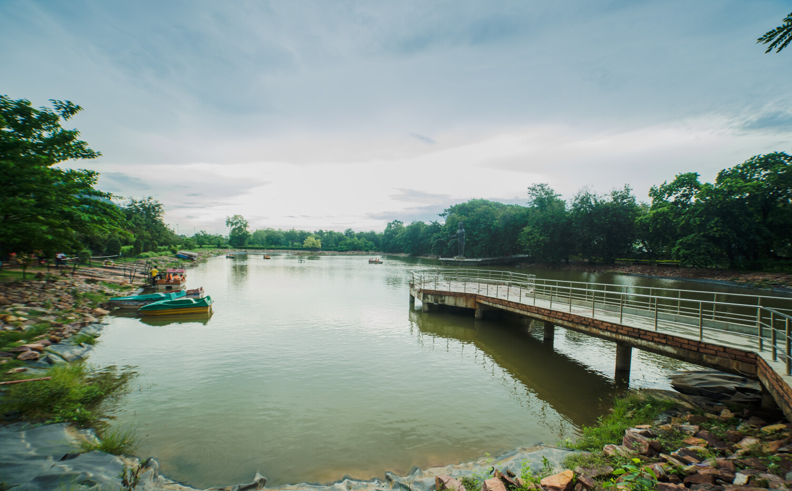

This is page containing information about some best places in Nalanda
For Exploring Nalanda kindly scroll
Pondu Pokhar
Spread out in an area of 22 acres Pandu Pokhar at Rajgir is a truly wonderful and magnificent
example of great Indian history that dates back to the Mahabharata. It extracts the story of how
King Pandu, the father of the Pandavas attacked Rajgriha and converted the place into a horse stable

Vishwa Shanti Stupa
Vishwa Shanti Stupa, also called the Peace Pagoda. It is located at the highest point of Ratnagiri
hill, at an altitude of 400 m in Rajgir, qualifying its serene charm as divine. Built completely
with marble, Stupa comprises four golden statues of Lord Buddha with each representing his life
periods of birth, enlightenment, preaching and death. There is a ropeway which helps the tourists
reach Vishwa Shanti Stupa a top Ratnagiri hill. The other way to reach this “Stupa” is a serpentine
staircase
Ruins of Nalanda
Nalanda is about 90 km southeast of Patna. Although its history goes back to the times of the
Buddha, the university at Nalanda was founded in the 5th century CE, and it flourished for the next
700 years. Its decline began in the late Pala period, but the final blow was the invasion by
Bakhtiyar Khilji around 1200 CE. The subjects that were taught at Nalanda included Buddhist
scriptures (of both the Mahayana and Hinayana schools), philosophy, theology, metaphysics, logic,
grammar, astronomy and medicine. Chinese travellers Hiuen-Tsang and I-Tsing had written detailed
accounts about the university.
Pipala cave
A fairly large 22' high ancient stone structure (Base- 85')(81 'and Top - 81 'x72') is locally known
as Jarasandha ki Baithak. The legendary infamous King's meeting quarter. The spot is situated just
above the Brahma Kund on the way to Saptaparni caves. However, some scholars believe it is a part of
the cyclopean fortification wall that was built for some military purpose.
The Buddhist texts mentions this place as Pippala cave as the abode of Mahakashyapa, the Buddha's
chief disciple. As per some academicians this place resembles Xuanzang's description where Devadatta
(Gautama Buddha's cousin) breathed his last.